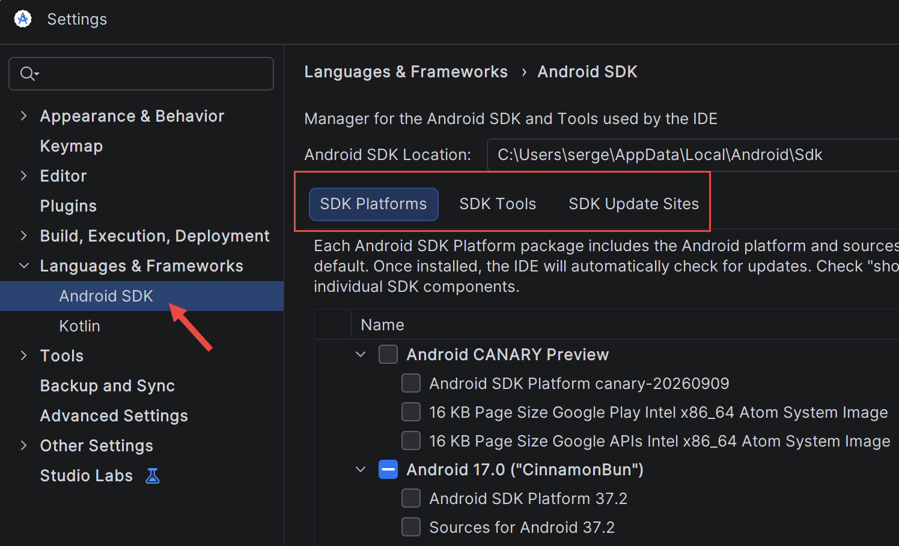

2. Hoofdstuk 1 - De werkomgeving inrichten
2.1. De hulpmiddelen installeren
- Node.js: download en installeer versie 22 (of hoger) via nodejs.org. Controleer de installatie in een terminal met de opdrachten [node --version] en [npm --version]. Node.js is alleen nodig voor de server [NestJS].
- [MySQL] 8: wordt in Hoofdstuk 2 geïnstalleerd met het hulpmiddel Laragon, dat ook het beheerprogramma HeidiSQL levert.
- Postman: gratis te downloaden op postman.com; wordt in Hoofdstuk 2 gebruikt om de server te testen.
- Visual Studio Code: optioneel, om de code van de server [NestJS] te bekijken.
Voor de client is slechts één hulpmiddel nodig: [Android Studio]. Een afzonderlijke JDK (Java Development Kit) hoeft niet te worden geïnstalleerd: Android Studio bevat een eigen JDK, de JetBrains Runtime ([JBR]), die wordt gebruikt om [Gradle] uit te voeren, het buildhulpmiddel voor Android-projecten. Ook de Kotlin-compiler hoeft niet te worden geïnstalleerd: die is een Gradle-plug-in die automatisch wordt gedownload wanneer het project voor het eerst wordt gebouwd.
2.1.1. Android Studio en de SDK voor Android
[Android Studio] kan gratis worden gedownload via [https://developer.android.com/studio]. Wanneer u het voor het eerst start, biedt de wizard een standaardinstallatie aan: accepteer die. Daarna wordt de Android SDK gedownload (de platformbibliotheken, compilatiehulpmiddelen en de emulator).

Dit document is getest met Android Studio Quail 4 (2026.1.4). Het startscherm biedt, via de link [More Actions], toegang tot [SDK Manager] en [Virtual Device Manager], die verderop worden gebruikt:

- [SDK Manager] installeert en actualiseert de componenten van de SDK voor Android. Tabblad [SDK Platforms]: controleer of een recent Android-platform is geïnstalleerd - het project in dit document wordt gecompileerd voor API 37 (Android 17). Ontbreekt het, dan downloadt Gradle het automatisch tijdens de eerste build;
- tabblad [SDK Tools]: controleer of [Android SDK Build-Tools], [Android SDK Platform-Tools] (met daarin het hulpprogramma [adb]) en [Android Emulator] zijn aangevinkt.

De SDK wordt standaard geïnstalleerd in de map [%LOCALAPPDATA%\Android\Sdk] (onder Windows). Twee van de submappen bevatten opdrachtregelprogramma's die in dit document worden gebruikt: [platform-tools] (het hulpprogramma [adb], waarmee u vanaf de computer een telefoon of emulator bestuurt) en [emulator]. U kunt deze twee mappen toevoegen aan de [PATH] van het systeem, zodat u in een terminal gewoon [adb] kunt typen.
2.2. Een Android-project maken met Android Studio
De clientcode wordt bij dit document geleverd (map [rdvmedecins-kotlin-client]). Die is gemaakt met de projectsjabloon [Empty Activity] van Android Studio en daarna uitgebreid. Laten we eerst bekijken hoe dit beginproject wordt gemaakt: het is het equivalent van de opdracht [flutter create] uit de cursus Flutter. Klik op het startscherm van Android Studio op [New Project]:

- Kies in de categorie [Phone and large screens] de sjabloon [Empty Activity]. Dit is de sjabloon „Jetpack Compose”: een app met één scherm waarvan de UI in Kotlin is gedefinieerd. De sjabloon [Empty Views Activity] daarentegen gebruikt het oudere view-systeem dat in XML wordt beschreven, en dat in dit document niet wordt gebruikt;
- klik op [Next].

- [Name]: de naam van de applicatie, die onder het pictogram op de telefoon wordt weergegeven. Voor dit document: [RdvMedecins];
- [Package name]: de unieke identificatie van de applicatie, in de vorm van een omgekeerde domeinnaam. Voor dit document: [fr.rdvmedecins.client]. Dit is tevens het basis-Kotlin-pakket voor de broncode;
- [Save location]: de projectmap;
- [Minimum SDK]: de oudste ondersteunde versie van Android. De client in dit document vereist API 26 (Android 8.0), wat vrijwel alle telefoons in gebruik dekt;
- [Build configuration language]: de taal voor de Gradle-configuratiebestanden. [Kotlin DSL (build.gradle.kts)] is de aanbevolen keuze: de buildconfiguratie wordt dan ook in Kotlin geschreven;
- [Finish] maakt het project aan. Android Studio start daarna een eerste „Gradle-synchronisatie”: Gradle zelf, de Android-plug-in, de Kotlin-compiler en de bibliotheken die het project declareert worden gedownload. Dit kan de eerste keer enkele minuten duren.
Het aangemaakte project heeft de volgende mapstructuur (de bestanden die de lezer van dit document heeft gewijzigd of toegevoegd, worden in Hoofdstuk 4 besproken):
[Gradle] speelt hier dezelfde rol als [npm] voor een Node.js-project of als [flutter]/[pub] voor het Flutter-project: het downloadt de afhankelijkheden, compileert de code en produceert de installeerbare applicatie, een .apk-bestand. De scripts [gradlew] (Linux, macOS) en [gradlew.bat] (Windows), de Gradle-„wrapper”, downloaden indien nodig de exacte versie van Gradle die het project vereist (vastgelegd in [gradle/wrapper/gradle-wrapper.properties]): een globale installatie van Gradle is niet nodig.
2.3. Het clientproject openen
Als u de code van dit document hebt gedownload, staat de client in de map [rdvmedecins-kotlin-client]. Om die te openen klikt u op het startscherm van Android Studio op de knop [Open] en selecteert u die map (de map die [settings.gradle.kts] bevat). Android Studio start dan de hierboven beschreven Gradle-synchronisatie. Het project verschijnt vervolgens in de weergave [Project] (links); de weergave [Android], die de standaardweergave is, groepeert bestanden op type (manifests, Kotlin+Java, assets, res) in plaats van op map.
Het project kan ook zonder Android Studio worden gebouwd, via de opdrachtregel. In een terminal die is geopend in de map [rdvmedecins-kotlin-client]:
- de eerste regel (PowerShell) geeft Gradle aan welke JDK moet worden gebruikt: die van Android Studio. Dit is overbodig als de variabele [JAVA_HOME] al op de machine is gedefinieerd;
- de tweede regel voert de Gradle-taak [assembleDebug] uit, die het project compileert en een „debug”-app produceert die op een emulator of telefoon kan worden geïnstalleerd.
Tijdens de eerste build downloadt Gradle alles wat nodig is en toont het vervolgens de lijst met taken die worden uitgevoerd:
- [compileDebugKotlin]: compilatie van Kotlin-code naar Java-bytecode;
- [dexBuilderDebug]: conversie van deze bytecode naar het DEX-formaat, het formaat dat door de virtuele machine van Android wordt uitgevoerd ([ART], Android Runtime);
- [packageDebug]: samenstelling van het bestand [app/build/outputs/apk/debug/app-debug.apk], de installeerbare applicatie.
2.4. Een Android-emulator instellen
Als u geen telefoon hebt, kunt u de app testen op een Android-emulator: een virtuele telefoon die in een venster op uw computer draait. Deze paragraaf is gelijk aan die uit de cursus Flutter.
[Prerequisites]: virtualisatie moet zijn ingeschakeld in het [BIOS] van de computer en onder Windows moet de functie [Windows Hypervisor Platform] zijn aangevinkt ([Control Panel / Programs / Turn Windows features on or off]), waarna een herstart nodig is. Anders start de emulator niet of draait die zeer traag.
Open de [Device Manager] in Android Studio: [More Actions / Virtual Device Manager] op het startscherm, of [Tools / Device Manager] wanneer een project is geopend.

Klik op [Create Device], kies een model (bijvoorbeeld [Pixel 8]) en daarna [Next]. Kies een recent Android-systeemimage voor de processor [x86_64] en download het met de link [Download] naast het image, en klik vervolgens op [Next] en [Finish].


Start de emulator met de knop [Play] in de [Device Manager]:

U kunt de emulator ook vanuit een terminal starten. De eerste opdracht toont de emulators die zijn aangemaakt; de tweede start een van die emulators:
Wacht tot het Android-startscherm in het emulatorvenster verschijnt (de eerste keer opstarten kan enkele minuten duren) en controleer daarna of het hulpprogramma [adb] de emulator detecteert:
[Note]: als [adb devices] de status [offline] toont in plaats van [device], is de emulator nog niet volledig opgestart, of verkeert [adb] in een inconsistente toestand. Wacht op het welkomstscherm en start, indien nodig, [adb] opnieuw met de opdrachten [adb kill-server] en daarna [adb start-server]. Blijft het probleem bestaan, gebruik dan [where.exe adb] om te controleren of er in de [PATH] geen andere [adb] staat, van een andere versie (bijvoorbeeld die van een eerdere SDK).
2.4.1. De Android-telefoon voorbereiden
Om de app op een echte Android-telefoon uit te voeren, moet de telefoon zo zijn ingesteld dat deze vanaf de computer kan worden bestuurd:
- schakel de ontwikkelaarsopties in: open [Settings / About phone] en tik meerdere keren (meestal 7) op [Build number] tot de telefoon meldt dat u ontwikkelaar bent. De exacte benamingen verschillen per fabrikant;
- schakel [USB debugging] in via het menu [Developer options] (dat in de vorige stap is toegevoegd);
- verbind de telefoon met de computer via een USB-kabel die gegevens overdraagt (en niet alleen de telefoon oplaadt) en accepteer op de telefoon het verzoek om autorisatie voor USB-foutopsporing. Als de telefoon onder Windows niet wordt herkend, installeert u het USB-stuurprogramma van de fabrikant („OEM USB drivers”, zie [https://developer.android.com/studio/run/oem-usb]);
- controleer of de telefoon voorkomt in de lijst die door [adb devices] wordt weergegeven.
De telefoon krijgt toegang tot de server [NestJS] via het IP-adres van de computer op het lokale netwerk of via de USB-kabel met de opdracht [adb reverse]. Deze instellingen worden in Hoofdstuk 5 beschreven.